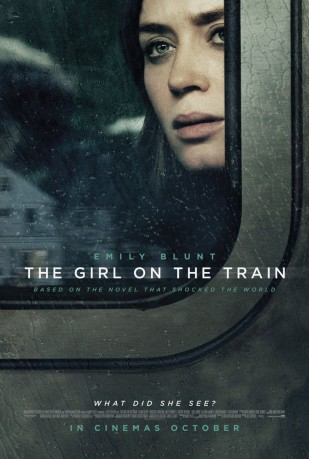

gesehen am 09.08.2017
gesehen am 09.08.2017Alternativ: The Girl on the Train gesehen am 09.08.2017
 
 IMDB-Wertung: 6.6 / 10
IMDB-Wertung: 6.6 / 10  Metascore:
Metascore: 
Jeden Tag nimmt die geschiedene Rachel Watson (Emily Blunt) den Zug, um nach Manhattan zur Arbeit zu kommen – zumindest tut sie so, denn vor Monaten hat sie ihren Job wegen ihres Alkoholproblems verloren und so fährt sie als reine Beschäftigungstherapie durch die Gegend. Und jeden Tag fährt sie damit an ihrem alten Haus vorbei, in dem sie mit ihrem Exmann gelebt hat. Dieser lebt noch immer in dem Haus, jetzt mit seiner neuen Frau und einem Kleinkind. Um sich von ihrem Schmerz abzulenken, fängt sie an, ein Pärchen (Hayley Bennett und Luke Evans) zu beobachten, das ein paar Häuser weiter wohnt. Die perfekte, glückliche Famile. Doch als sie eines Tages wieder mit dem Zug vorbei fährt, beobachtet sie etwas Schockierendes.
Jahr: 2016
Dauer: 112 Minuten
FSK: 16
Land: USA Studio: Universal PicturesTonspuren: DD5.1 - ,
Untertitel: Deutsch, Englisch,
Auflösung: 1080p (1920x1040) Größe: 8437 MB
Genre: Thriller, Drama, Mystery
Regisseur:  Tate Taylor
Tate Taylor
Drehbuch: Steffen Haars
Soundtrack:
Darsteller:
 Emily Blunt als Rachel
Emily Blunt als Rachel Haley Bennett als Megan
Haley Bennett als Megan Rebecca Ferguson als Anna
Rebecca Ferguson als Anna Justin Theroux als Tom
Justin Theroux als Tom Luke Evans als Scott
Luke Evans als Scott Edgar Ramírez als Dr. Kamal Abdic
Edgar Ramírez als Dr. Kamal Abdic Allison Janney als Detective Riley
Allison Janney als Detective Riley Darren Goldstein als Man in the Suit
Darren Goldstein als Man in the Suit Lisa Kudrow als Martha
Lisa Kudrow als Martha Frank Anello als Field Reporter , uncredited
Frank Anello als Field Reporter , uncredited Marko Caka als Businessman Gallery , uncredited
Marko Caka als Businessman Gallery , uncredited Alexander Jameson als Parochial School Kid , uncredited
Alexander Jameson als Parochial School Kid , uncredited Faith Logan als Grand Central Commuter , uncredited
Faith Logan als Grand Central Commuter , uncredited Doris McCarthy als Businesswoman , uncredited
Doris McCarthy als Businesswoman , uncredited Mauricio Ovalle als Conductor , uncredited
Mauricio Ovalle als Conductor , uncredited Johnny Otto als Officer Matlin , uncredited
Johnny Otto als Officer Matlin , uncreditedDatei: X:\2016(G-M)\Girl on the Train (2016, FSK16, 1920x1040).mkv seit 30.12.2016
Festplatte: HD 2016(A-Z)
 Es gibt insgesamt 164 Filme in der Gruppe '2016(G-M)'
Es gibt insgesamt 164 Filme in der Gruppe '2016(G-M)'